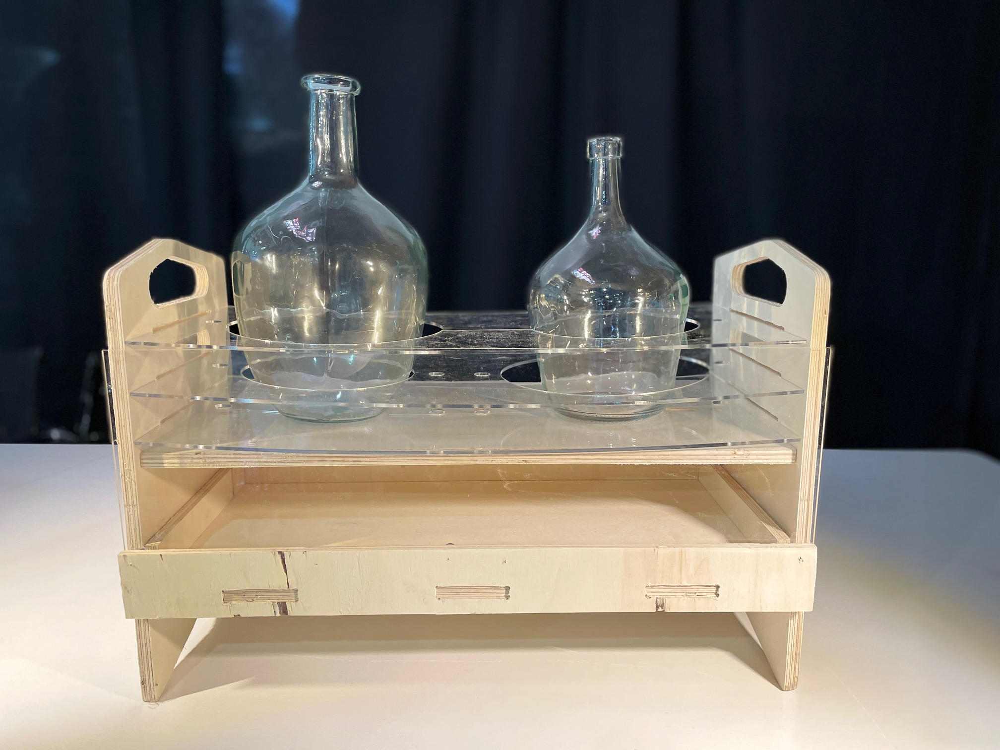
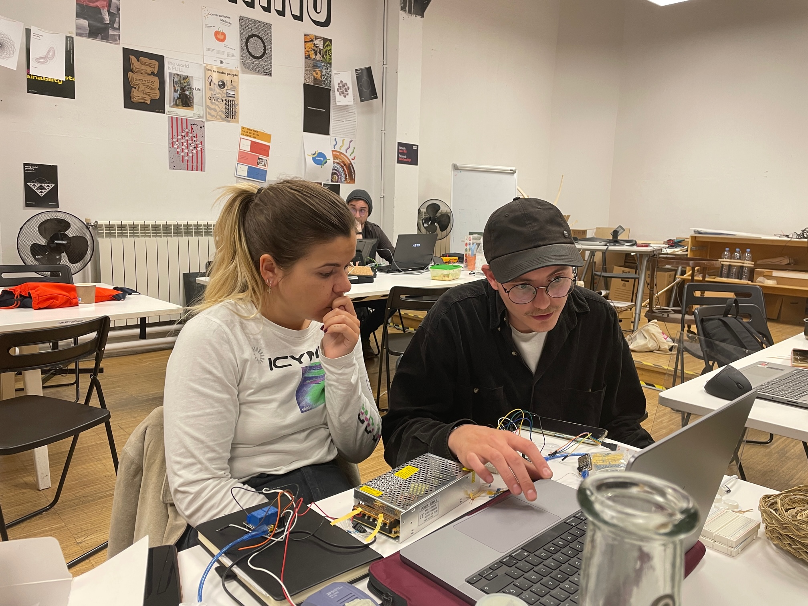
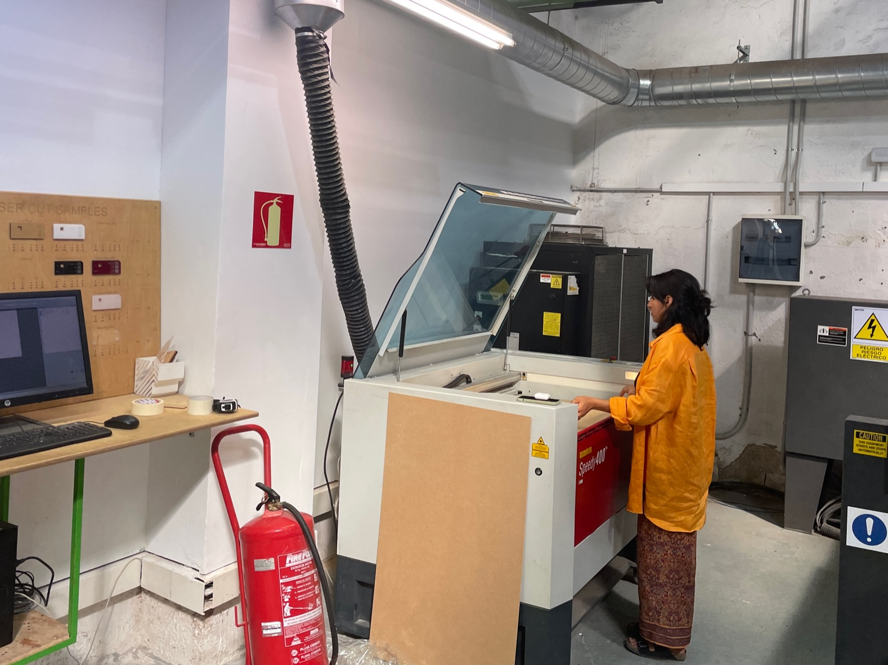
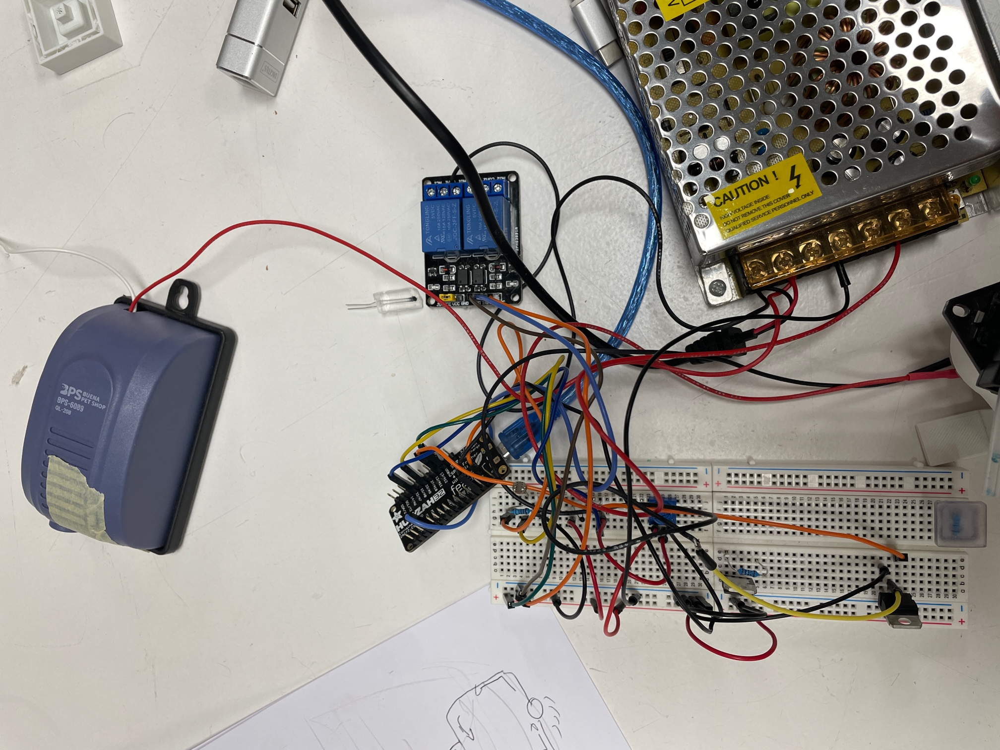

For the third micro challenge, I again teamed up with Pippa Formosa and Paula Del Rio Arteaga. Detailed information about the process and final outcome can be found here. We decided to create a second iteration of the photobioreactor that we had created from the previous micro challenge. We wanted to create this new 2.0 version because although the previous photobioreactor was interesting visually, it wasn’t as portable or compact as we wanted. This version would make it easier to transport. The brief for the third micro challenge was to create something with ethical design. I believe that with this project we can achieve these goals including spreading information to larger audiences, bringing people and living species together, generating new ideas for nutrient intake, understanding new ways of creating home agriculture, and bioremediation of air.
With this micro challenge, overall I felt I was much more mentally prepared. This may have been because I knew that we were going to do a second iteration of it for a while. Perhaps also because this is the third time we have had a micro challenge, so my general anxieties around the process have gone down. Pippa, Paula and I functioned well as a group. I felt our biggest downfall we had was losing a day of the challenge due to our group being out of town/sick. With an additional day, I think we would have been less rushed and accomplished more of what we wanted. In general, I felt much more confident and comfortable using all of the machines and enjoyed myself more during the process.
With this challenge, we incorporated programming and electronics, CNC milling, laser cutting, 3D printing, mold making, and using github. This challenge really did feel like we utilized many of the skills that we have been learning during Fab Academy. For the challenge, Paula mainly focused on the coding and electronics part while Pippa and I tackled the fabrication and documentation in the repository. Because this micro challenge was so heavily tasked in incorporating electronics programming, I really wish I would’ve had more time to be able to do more of it to understand the mechanics of it. However, since we were already running a day behind, it felt like a sprint to the finish. Overall, I am happy with the concept of the new design. However, there were some blunders that we will have to fix in the coming week. I realized how hard it is to get a design perfect on the first try, and this felt more like a prototype. It is just a bit frustrating when there is a physical output that is not exactly what I envisioned. With this new PBR being more transportable, it can be used to spread knowledge of the microalgae much better. I want to be able to use it to show people what can be done with it and the amazing qualities it has. I’m glad I had the opportunity with this micro challenge to make a second iteration.
 